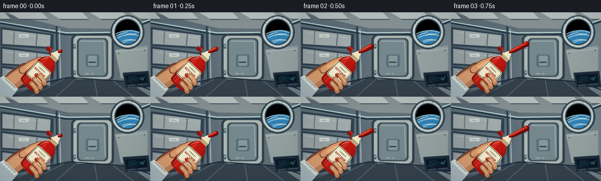
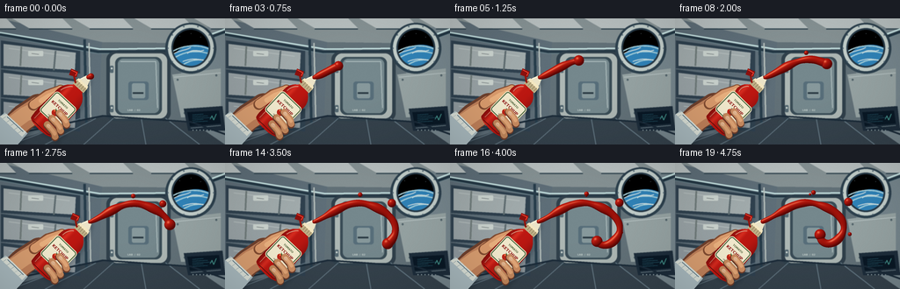
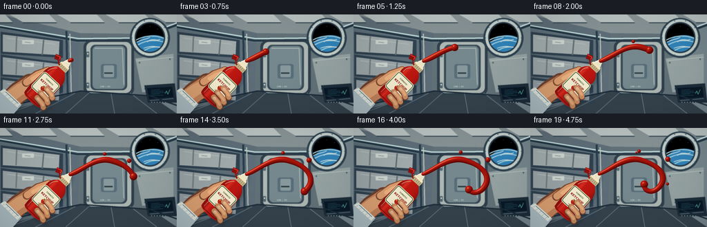
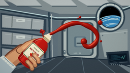

CODING AGENTS AS PIXEL WORLD MODELS
traex/GPT-6.1-Sol · mechanics_0004
点击播放 · 原生 RGB 像素
逐轮保存的候选
回放视频、检查图与代码变化。
每份候选均可单独播放。实际图片检查记录在下方工具轨迹中。
候选 01播放与检查图
点击播放 · 原生 RGB 像素


展开代码变化
--- 上一保存版本
+++ 本次保存版本
@@ -0,0 +1,262 @@
+from pathlib import Path
+import math
+import numpy as np
+from PIL import Image, ImageDraw, ImageFont, ImageFilter
+import artifact_io
+
+ROOT=Path(__file__).resolve().parent
+W,H,S=256,144,4
+WW,HH=W*S,H*S
+rng=np.random.default_rng(41)
+
+def font(sz,bold=False):
+ return ImageFont.truetype('/usr/share/fonts/truetype/dejavu/DejaVuSans'+('-Bold' if bold else '')+'.ttf',round(sz*S))
+def line(d,p,fill,width=1): d.line([(round(x*S),round(y*S)) for x,y in p],fill=fill,width=max(1,round(width*S)),joint='curve')
+def poly(d,p,fill): d.polygon([(round(x*S),round(y*S)) for x,y in p],fill=fill)
+def rect(d,b,fill,rad=0,outline=None,width=1):
+ bb=tuple(round(v*S) for v in b)
+ if rad: d.rounded_rectangle(bb, radius=round(rad*S),fill=fill,outline=outline,width=round(width*S))
+ else: d.rectangle(bb,fill=fill,outline=outline,width=round(width*S))
+def ellipse(d,b,fill,outline=None,width=1): d.ellipse(tuple(round(v*S) for v in b),fill=fill,outline=outline,width=round(width*S))
+def text(d,xy,s,size,fill,bold=False,anchor=None): d.text((xy[0]*S,xy[1]*S),s,font=font(size,bold),fill=fill,anchor=anchor)
+def bezier(p,n=45):
+ p=np.array(p,float);t=np.linspace(0,1,n)[:,None]
+ return ((1-t)**3*p[0]+3*(1-t)**2*t*p[1]+3*(1-t)*t*t*p[2]+t**3*p[3]).tolist()
+
+# A fixed close camera view of a pressurised orbital laboratory.
+def background():
+ yy,xx=np.mgrid[0:HH,0:WW]/S
+ glow=np.exp(-((xx-164)**2/16000+(yy-37)**2/4000))
+ base=np.stack([58+56*glow,72+59*glow,82+64*glow],axis=-1)
+ im=Image.fromarray(np.uint8(base));d=ImageDraw.Draw(im)
+ # Wall planes and the recessed end hatch.
+ poly(d,[(0,0),(256,0),(199,28),(116,27)],(135,147,149))
+ poly(d,[(0,0),(116,27),(113,111),(0,144)],(95,111,121))
+ poly(d,[(116,27),(199,28),(218,118),(113,111)],(99,114,121))
+ poly(d,[(199,28),(256,0),(256,144),(218,118)],(119,135,142))
+ poly(d,[(0,144),(113,111),(218,118),(256,144)],(54,67,77))
+ # Top segmented white acoustic/insulation panels.
+ for x0 in [-50,14,83,153,221]:
+ poly(d,[(x0,0),(x0+57,0),(x0+68,11),(x0+19,11)],(186,194,194))
+ line(d,[(x0+19,12),(x0+68,12)],(49,69,80),1.3)
+ line(d,[(0,18),(112,38),(197,37),(256,15)],(36,56,69),3)
+ line(d,[(0,16),(114,35),(198,34),(256,12)],(202,231,230),1.7)
+ line(d,[(0,20),(111,40),(196,39),(256,17)],(110,139,147),.8)
+ # Storage racks on the left foreground wall.
+ for k in range(3):
+ y=29+33*k
+ poly(d,[(1,y-4),(91,y+8),(91,y+34),(1,y+28)],(48,66,80))
+ poly(d,[(4,y),(86,y+10),(85,y+30),(4,y+25)],(163-k*8,173-k*8,174-k*6))
+ line(d,[(10,y+5),(79,y+14)],(186,195,194),1)
+ line(d,[(24,y+3),(23,y+25)],(113,125,124),2)
+ line(d,[(63,y+8),(61,y+30)],(96,110,114),2)
+ rect(d,(32,y+8,49,y+14),(205,214,209),1)
+ line(d,[(36,y+11),(44,y+12)],(96,104,106),.7)
+ line(d,[(96,24),(98,119)],(40,62,76),3)
+ line(d,[(101,28),(103,115)],(187,196,192),1.5)
+ # End hatch, thick frame and recessed seals.
+ rect(d,(121,38,194,117),(49,65,76),9)
+ rect(d,(125,40,190,114),(174,184,181),8)
+ rect(d,(131,44,184,110),(58,77,87),7)
+ rect(d,(134,46,181,108),(118,137,142),6)
+ line(d,[(137,49),(177,49),(179,102)],(177,192,193),.9)
+ rect(d,(146,72,169,93),(88,111,123),3)
+ rect(d,(150,74,165,91),(136,154,157),2)
+ line(d,[(151,85),(163,85)],(44,60,69),2)
+ for y in [54,99]:
+ rect(d,(125,y,129,y+8),(85,105,114),1)
+ ellipse(d,(126,y+2,128,y+4),(211,219,215))
+ text(d,(145,103),'LAB / 02',2.7,(206,217,212),True)
+ # Panelling, restrained industrial detail.
+ poly(d,[(196,64),(251,57),(251,110),(206,113)],(151,164,164))
+ line(d,[(198,67),(251,62)],(202,214,214),.7)
+ for x,y in [(202,70),(246,65),(210,108),(247,107)]:
+ ellipse(d,(x-1,y-1,x+1,y+1),(47,66,75));line(d,[(x-.4,y),(x+.4,y)],(163,182,188),.4)
+ # Small computer console.
+ poly(d,[(209,103),(253,100),(256,128),(214,128)],(30,46,60))
+ poly(d,[(213,107),(249,105),(251,120),(216,123)],(10,25,38))
+ for k in range(5):
+ line(d,[(219,110+k*2),(231+(k%3)*5,109+k*2)],(65,151,170),.6)
+ line(d,[(239,115),(241,111),(243,116),(246,109)],(88,190,173),.7)
+ line(d,[(217,125),(251,122)],(111,129,137),1)
+ for k in range(7): ellipse(d,(219+k*4,127,220.1+k*4,128),(163,181,183))
+ # Circular observation port with blue Earth seen against black space.
+ ellipse(d,(188,5,246,63),(46,66,79))
+ ellipse(d,(191,7,243,60),(195,207,203))
+ ellipse(d,(195,11,239,56),(39,58,72))
+ ellipse(d,(197,13,237,54),(5,15,29))
+ sky=Image.new('RGB',(WW,HH),(0,0,0));sd=ImageDraw.Draw(sky)
+ ellipse(sd,(190,30,257,99),(21,74,127))
+ ellipse(sd,(189,30,256,98),(49,132,185),width=1)
+ # Atmospheric curve and cloud bands.
+ for p in [((191,42),(205,28),(232,27),(250,42)),((195,47),(209,37),(226,34),(245,43)),((207,54),(218,44),(238,45),(254,56))]:
+ line(sd,bezier(p),(167,210,221),1.5)
+ for p in [((195,42),(203,36),(210,37),(217,33)),((213,40),(220,33),(226,39),(232,36)),((208,49),(218,45),(224,46),(233,48))]:
+ line(sd,bezier(p),(221,231,229),1.1)
+ mask=Image.new('L',(WW,HH));ellipse(ImageDraw.Draw(mask),(197,13,237,54),255)
+ im.paste(sky,(0,0),mask);d=ImageDraw.Draw(im)
+ for x,y in [(204,20),(217,17),(228,21)]:ellipse(d,(x,y,x+.4,y+.4),(179,202,216))
+ for a in np.linspace(0,2*math.pi,10,endpoint=False):
+ x=217+26*math.cos(a);y=34+26*math.sin(a)
+ ellipse(d,(x-.8,y-.8,x+.8,y+.8),(85,105,118))
+ # Rails and strapped flooring, perspective cues.
+ for a in [12,51,95,166,227]:line(d,[(a,144),(122+(a-80)*.45,114)],(104,124,136),1.1)
+ line(d,[(0,135),(117,111),(217,118),(256,132)],(27,43,57),2)
+ # Ambient softness and faint surface grain.
+ im=im.filter(ImageFilter.GaussianBlur(.35*S))
+ arr=np.array(im,dtype=float);noise=rng.normal(0,.55,(HH,WW,1));arr+=noise
+ return Image.fromarray(np.uint8(np.clip(arr,0,255)))
+
+BG=background()
+
+def make_bottle(t):
+ # Local coordinates: bottle is vertical; transform together with gripping hand.
+ ss=3.5*math.sin(math.pi*min(t/3.5,1))**2
+ c=(67+.8*math.sin(t*.65),103-.6*math.sin(t*.7));theta=math.radians(43+1.5*math.sin(t*.8))
+ def tr(p):
+ x,y=p;return(c[0]+x*math.cos(theta)-y*math.sin(theta),c[1]+x*math.sin(theta)+y*math.cos(theta))
+ layer=Image.new('RGBA',(WW,HH));d=ImageDraw.Draw(layer)
+ def lp(p,col):poly(d,[tr(a) for a in p],col)
+ def ll(p,col,w):line(d,[tr(a) for a in p],col,w)
+ def capsule(points,width,col):
+ ps=[tr(a) for a in points];line(d,ps,col,width)
+ for x,y in [ps[0],ps[-1]]:ellipse(d,(x-width/2,y-width/2,x+width/2,y+width/2),col)
+ # Palm and sleeve behind the container.
+ capsule([(-23,62),(-23,36),(-18,15)],31,(112,66,47,255))
+ capsule([(-25,61),(-22,36),(-17,15)],27,(194,130,91,255))
+ capsule([(-29,58),(-24,31),(-18,16)],17,(220,160,114,255))
+ lp([(-42,45),(-7,45),(-6,77),(-47,79)],(173,190,195,255))
+ lp([(-40,45),(-9,45),(-9,52),(-43,52)],(222,228,219,255))
+ ll([(-37,47),(-12,47)],(93,121,137,255),1)
+ for x in [-38,-32,-26,-20,-14]:ll([(x,48),(x-1,52)],(156,174,177,255),.6)
+ # Thumb travels upward along the left shoulder, behind the front label.
+ capsule([(-24,17),(-21,-2),(-13,-17)],12,(133,78,51,255))
+ capsule([(-24,16),(-20,-3),(-13,-17)],10,(222,158,111,255))
+ capsule([(-21,7),(-18,-4),(-13,-15)],5.5,(238,180,129,255))
+ # Sculpted flexible bottle silhouette; shoulder narrows to its neck.
+ half=16.5
+ pts=bezier([(-half,29),(-19,18),(-half+ss,-1),(-half+ss,-14)],25)
+ pts+=bezier([(-half+ss,-14),(-16,-25),(-9,-29),(-7,-31)],20)
+ pts +=[(-7,-39),(7,-39),(7,-31)]
+ pts+=bezier([(7,-31),(9,-29),(16,-25),(half-ss,-14)],20)
+ pts+=bezier([(half-ss,-14),(half-ss,0),(19,18),(half,29)],25)
+ pts+=bezier([(half,29),(12,34),(-12,34),(-half,29)],20)
+ mask=Image.new('L',(WW,HH));md=ImageDraw.Draw(mask);poly(md,[tr(p) for p in pts],255)
+ yy,xx=np.mgrid[0:HH,0:WW]/S
+ lx=(xx-c[0])*math.cos(theta)+(yy-c[1])*math.sin(theta)
+ ly=-(xx-c[0])*math.sin(theta)+(yy-c[1])*math.cos(theta)
+ side=np.maximum(0,1-(lx/19)**2)**.55
+ sheen=np.exp(-((lx+8)/3.0)**2)*(.65+.35*np.cos(ly/65))
+ col=np.stack([98+93*side+35*sheen,9+15*side+21*sheen,9+9*side+14*sheen],-1)
+ bottle=Image.fromarray(np.uint8(np.clip(col,0,255)))
+ layer.paste(bottle,(0,0),mask);d=ImageDraw.Draw(layer)
+ ll([(-13,27),(-13,17),(-12+ss,-7)],(243,91,54,150),.8)
+ ll(bezier([(-13+ss,-17),(-12,-23),(-8,-28),(-6,-29)]),(255,139,105,170),1)
+ ll([(-12,30),(10,30),(14,28)],(104,15,11,255),1)
+ # Vintage cream label, rendered in bottle-local coordinates.
+ label=Image.new('RGBA',(48*S,35*S));ld=ImageDraw.Draw(label)
+ def lrect(b,col,r=0):rect(ld,b,col,r)
+ lrect((8,1,40,32),(234,225,190,255),4)
+ lrect((9,2,39,31),(79,107,68,255),3)
+ lrect((10,3,38,30),(247,239,210,255),2)
+ text(ld,(24,8),'TOMATO',3.0,(81,99,60,255),True,anchor='mm')
+ text(ld,(24,14),'KETCHUP',4.4,(147,23,20,255),True,anchor='mm')
+ ellipse(ld,(20,18,28,25),(192,37,24,255));ellipse(ld,(21,19,23,21),(239,110,62,255))
+ poly(ld,[(24,20),(21,17),(24,18),(25,16),(26,19),(28,18),(27,20)],(66,117,57,255))
+ text(ld,(24,28),'ORIGINAL',2.1,(98,92,70,255),anchor='mm')
+ # Affine inverse mapping from screen into the small local label image.
+ co,si=math.cos(theta),math.sin(theta)
+ aff=(co,si,S*(24-c[0]*co-c[1]*si),-si,co,S*(15+c[0]*si-c[1]*co))
+ # label occupies local y -15 .. +20.
+ warped=label.transform((WW,HH),Image.Transform.AFFINE,aff,Image.Resampling.BICUBIC)
+ layer.alpha_composite(warped);d=ImageDraw.Draw(layer)
+ # Screw collar and tapered dispensing spout.
+ lp([(-8,-38),(-8,-32),(8,-32),(8,-38)],(194,178,136,255))
+ lp([(-8,-38),(-7,-41),(7,-41),(8,-38)],(246,233,194,255))
+ for x in [-6,-3,0,3,6]:ll([(x,-38),(x,-33)],(139,122,90,255),.5)
+ lp([(-6,-41),(-3,-49),(3,-49),(6,-41)],(237,229,201,255))
+ ll([(-5,-42),(-2.5,-48)],(255,250,226,255),1)
+ ll([(-2.5,-49),(2.5,-49)],(101,23,14,255),1.6)
+ # Hinged flip lid swung away from the stream.
+ capsule([(-7,-35),(-14,-40)],2,(148,22,15,255))
+ lp([(-21,-43),(-13,-46),(-10,-40),(-18,-36)],(141,17,14,255))
+ ll([(-20,-42),(-13,-44),(-12,-40)],(244,67,47,255),1)
+ # Three fingers fold over the lower right edge; subtle increasing squeeze.
+ for j,(y,len_) in enumerate([(6,10),(16,12),(25,11)]):
+ x=14-ss*.5
+ ps=[(x+5,y+2),(x,y-1),(x-len_,y-2)]
+ capsule(ps,8.6,(110,62,44,255))
+ capsule([(a-.5,b-.8) for a,b in ps],7.2,(205-j*5,142-j*3,98-j*3,255))
+ capsule([(x+2,y-.8),(x-3,y-2),(x-len_+1,y-2.6)],3.8,(231-j*4,171-j*4,123-j*4,255))
+ ll([(x-3,y+1),(x-4,y+2)],(159,96,64,255),.5)
+ # Soft oval nail at each rounded tip.
+ nailpts=bezier([(x-len_-1,y-2),(x-len_,y-5),(x-len_+5,y-5),(x-len_+4,y-1)],15)
+ nailpts+=bezier([(x-len_+4,y-1),(x-len_+2,y),(x-len_,y),(x-len_-1,y-2)],15)
+ lp(nailpts,(229-j*2,183-j*3,145-j*3,255))
+ ll([(x-len_,y-3.5),(x-len_+2.5,y-4)],(249,216,183,255),.4)
+ return layer,tr((0,-49))
+
+# Smooth thick liquid: a union of densely sampled spheres yields a continuous
+# rounded, glossy free-floating stream rather than a gravity-driven waterfall.
+path=np.array(bezier([(0,0),(18,-6),(39,-26),(62,-17)],90)+bezier([(62,-17),(88,-9),(100,10),(84,27)],70)[1:]+bezier([(84,27),(75,36),(64,33),(64,23)],35)[1:])
+dist=np.r_[0,np.cumsum(np.linalg.norm(np.diff(path,axis=0),axis=1))];dist/=dist[-1]
+
+def ketchup(im,t,nozzle):
+ yy,xx=np.mgrid[0:HH,0:WW].astype(np.float32)/S
+ z2=np.full((HH,WW),-1000.,np.float32)
+ progress=min(.022+.235*t,1)
+ positions=[]
+ for i,p in enumerate(path):
+ if dist[i]>progress:break
+ u=dist[i]
+ drift=np.array([.35*t*u, -1.35*t*u])
+ wav=np.array([.8*math.sin(t*1.2+u*6)*u,1.5*math.sin(t*.9+u*7)*u])
+ center=np.array(nozzle)+p+drift+wav
+ r=(2.4+1.5*(1-math.exp(-u*18))+.4*math.sin(u*15+t*.7))
+ positions.append((center[0],center[1],r))
+ # Coherent lobed leading end swells as extrusion develops.
+ if positions:
+ x,y,r=positions[-1];positions += [(x,y,3+2.6*(1-math.exp(-t*1.7)))]
+ # Detached beads move slowly in different directions, weightlessly.
+ for birth,x,y,vx,vy,r in [(1.6,148,40,3,-2,2.6),(2.4,185,48,6,-1.1,3.8),(2.8,188,76,5.5,2.7,2.2),(3.5,156,38,-2,-1.7,1.5)]:
+ if t>birth:
+ age=t-birth
+ positions.append((x+vx*age,y+vy*age,r*min(1,age*2.4)))
+ for x,y,r in positions:
+ b=(xx-x)**2+(yy-y)**2
+ np.maximum(z2,r*r-b,out=z2)
+ valid=z2>0
+ z=np.sqrt(np.maximum(z2,0))
+ # Analytic heightfield normals and studio-style reflections.
+ gy,gx=np.gradient(z,1/S,1/S)
+ norm=np.sqrt(gx*gx+gy*gy+1)
+ nx,ny,nz=-gx/norm,-gy/norm,1/norm
+ lam=np.clip(-.42*nx-.56*ny+.71*nz,0,1)
+ spec=np.maximum(0,-.30*nx-.43*ny+.85*nz)**32
+ wide=np.maximum(0,-.70*nx+.10*ny+.69*nz)**13
+ rgb=np.stack([91+99*lam+61*spec+17*wide,7+17*lam+91*spec+12*wide,4+10*lam+65*spec+9*wide],axis=-1)
+ # Rich red occlusion rim; tiny saturated specular sheen.
+ rgb=np.clip(rgb,0,255).astype(np.uint8)
+ mask=Image.fromarray(np.uint8(valid)*255)
+ liquid=Image.fromarray(rgb)
+ im.paste(liquid,(0,0),mask)
+ return im
+
+frames=[]
+for i in range(20):
+ t=i/4
+ im=BG.copy().convert('RGBA')
+ bottle,nozzle=make_bottle(t)
+ # Restrained contact-free foreground shadow adds separation from the cabin.
+ sh=bottle.getchannel('A').filter(ImageFilter.GaussianBlur(2*S))
+ shadow=Image.new('RGBA',(WW,HH),(7,18,27,0));shadow.putalpha(sh.point(lambda v:round(v*.22)))
+ im.alpha_composite(shadow,(2*S,3*S));im.alpha_composite(bottle)
+ im=ketchup(im,t,nozzle).convert('RGB')
+ # Subtle photographic corner falloff, no captions or graphic overlays.
+ arr=np.array(im,dtype=np.float32)
+ yy,xx=np.mgrid[0:HH,0:WW]/S
+ vign=1-.13*((xx-138)**2/(170**2)+(yy-65)**2/(115**2))
+ arr*=vign[...,None]
+ im=Image.fromarray(np.uint8(np.clip(arr,0,255))).resize((W,H),Image.Resampling.LANCZOS)
+ frames.append(np.array(im))
+artifact_io.save(np.stack(frames),ROOT)
候选 02播放与检查图
点击播放 · 原生 RGB 像素

展开代码变化
--- 上一保存版本
+++ 本次保存版本
@@ -212,13 +212,13 @@
drift=np.array([.35*t*u, -1.35*t*u])
wav=np.array([.8*math.sin(t*1.2+u*6)*u,1.5*math.sin(t*.9+u*7)*u])
center=np.array(nozzle)+p+drift+wav
- r=(2.4+1.5*(1-math.exp(-u*18))+.4*math.sin(u*15+t*.7))
+ r=(2.3+2.0*(1-math.exp(-u*18))+.70*math.sin(u*20-t*.65)+.35*math.sin(u*39+t*.3))
positions.append((center[0],center[1],r))
# Coherent lobed leading end swells as extrusion develops.
if positions:
- x,y,r=positions[-1];positions += [(x,y,3+2.6*(1-math.exp(-t*1.7)))]
+ x,y,r=positions[-1];positions += [(x,y,3+3.35*(1-math.exp(-t*1.7)))]
# Detached beads move slowly in different directions, weightlessly.
- for birth,x,y,vx,vy,r in [(1.6,148,40,3,-2,2.6),(2.4,185,48,6,-1.1,3.8),(2.8,188,76,5.5,2.7,2.2),(3.5,156,38,-2,-1.7,1.5)]:
+ for birth,x,y,vx,vy,r in [(1.6,148,40,3,-2,2.6),(2.4,183,47,6,-1.1,4.8),(2.8,188,76,5.5,2.7,2.2),(3.5,156,38,-2,-1.7,1.5)]:
if t>birth:
age=t-birth
positions.append((x+vx*age,y+vy*age,r*min(1,age*2.4)))
可观测工具轨迹
实际执行的命令与返回图片。
命令 1exit 0
/bin/bash -lc 'ls -la && cat prompt.txt && cat GENERATION_RULES.md && cat task_spec.json'
命令 2exit 0
/bin/bash -lc "cat artifact_io.py && python - <<'PY' import importlib.util for a in ['numpy','PIL','scipy','cv2']: print(a, bool(importlib.util.find_spec(a))) PY"
命令 3exit 0
/bin/bash -lc 'fc-list | head -12'
命令 4exit 0
/bin/bash -lc "cat > generate.py <<'PY'
from pathlib import Path
import math
import numpy as np
from PIL import Image, ImageDraw, ImageFont, ImageFilter
import artifact_io
ROOT=Path(__file__).resolve().parent
W,H,S=256,144,4
WW,HH=W*S,H*S
rng=np.random.default_rng(41)
def font(sz,bold=False):
return ImageFont.truetype('/usr/share/fonts/truetype/dejavu/DejaVuSans'+('-Bold' if bold else '')+'.ttf',round(sz*S))
def line(d,p,fill,width=1): d.line([(round(x*S),round(y*S)) for x,y in p],fill=fill,width=max(1,round(width*S)),joint='curve')
def poly(d,p,fill): d.polygon([(round(x*S),round(y*S)) for x,y in p],fill=fill)
def rect(d,b,fill,rad=0,outline=None,width=1):
bb=tuple(round(v*S) for v in b)
if rad: d.rounded_rectangle(bb, radius=round(rad*S),fill=fill,outline=outline,width=round(width*S))
else: d.rectangle(bb,fill=fill,outline=outline,width=round(width*S))
def ellipse(d,b,fill,outline=None,width=1): d.ellipse(tuple(round(v*S) for v in b),fill=fill,outline=outline,width=round(width*S))
def text(d,xy,s,size,fill,bold=False,anchor=None): d.text((xy[0]*S,xy[1]*S),s,font=font(size,bold),fill=fill,anchor=anchor)
def bezier(p,n=45):
p=np.array(p,float);t=np.linspace(0,1,n)[:,None]
return ((1-t)**3*p[0]+3*(1-t)**2*t*p[1]+3*(1-t)*t*t*p[2]+t**3*p[3]).tolist()
# A fixed close camera view of a pressurised orbital laboratory.
def background():
yy,xx=np.mgrid[0:HH,0:WW]/S
glow=np.exp(-((xx-164)**2/16000+(yy-37)**2/4000))
base=np.stack([58+56*glow,72+59*glow,82+64*glow],axis=-1)
im=Image.fromarray(np.uint8(base));d=ImageDraw.Draw(im)
# Wall planes and the recessed end hatch.
poly(d,[(0,0),(256,0),(199,28),(116,27)],(135,147,149))
poly(d,[(0,0),(116,27),(113,111),(0,144)],(95,111,121))
poly(d,[(116,27),(199,28),(218,118),(113,111)],(99,114,121))
poly(d,[(199,28),(256,0),(256,144),(218,118)],(119,135,142))
poly(d,[(0,144),(113,111),(218,118),(256,144)],(54,67,77))
# Top segmented white acoustic/insulation panels.
for x0 in [-50,14,83,153,221]:
poly(d,[(x0,0),(x0+57,0),(x0+68,11),(x0+19,11)],(186,194,194))
line(d,[(x0+19,12),(x0+68,12)],(49,69,80),1.3)
line(d,[(0,18),(112,38),(197,37),(256,15)],(36,56,69),3)
line(d,[(0,16),(114,35),(198,34),(256,12)],(202,231,230),1.7)
line(d,[(0,20),(111,40),(196,39),(256,17)],(110,139,147),.8)
# Storage racks on the left foreground wall.
for k in range(3):
y=29+33*k
poly(d,[(1,y-4),(91,y+8),(91,y+34),(1,y+28)],(48,66,80))
poly(d,[(4,y),(86,y+10),(85,y+30),(4,y+25)],(163-k*8,173-k*8,174-k*6))
line(d,[(10,y+5),(79,y+14)],(186,195,194),1)
line(d,[(24,y+3),(23,y+25)],(113,125,124),2)
line(d,[(63,y+8),(61,y+30)],(96,110,114),2)
rect(d,(32,y+8,49,y+14),(205,214,209),1)
line(d,[(36,y+11),(44,y+12)],(96,104,106),.7)
line(d,[(96,24),(98,119)],(40,62,76),3)
line(d,[(101,28),(103,115)],(187,196,192),1.5)
# End hatch, thick frame and recessed seals.
rect(d,(121,38,194,117),(49,65,76),9)
rect(d,(125,40,190,114),(174,184,181),8)
rect(d,(131,44,184,110),(58,77,87),7)
rect(d,(134,46,181,108),(118,137,142),6)
line(d,[(137,49),(177,49),(179,102)],(177,192,193),.9)
rect(d,(146,72,169,93),(88,111,123),3)
rect(d,(150,74,165,91),(136,154,157),2)
line(d,[(151,85),(163,85)],(44,60,69),2)
for y in [54,99]:
rect(d,(125,y,129,y+8),(85,105,114),1)
ellipse(d,(126,y+2,128,y+4),(211,219,215))
text(d,(145,103),'LAB / 02',2.7,(206,217,212),True)
# Panelling, restrained industrial detail.
poly(d,[(196,64),(251,57),(251,110),(206,113)],(151,164,164))
line(d,[(198,67),(251,62)],(202,214,214),.7)
for x,y in [(202,70),(246,65),(210,108),(247,107)]:
ellipse(d,(x-1,y-1,x+1,y+1),(47,66,75));line(d,[(x-.4,y),(x+.4,y)],(163,182,188),.4)
# Small computer console.
poly(d,[(209,103),(253,100),(256,128),(214,128)],(30,46,60))
poly(d,[(213,107),(249,105),(251,120),(216,123)],(10,25,38))
for k in range(5):
line(d,[(219,110+k*2),(231+(k%3)*5,109+k*2)],(65,151,170),.6)
line(d,[(239,115),(241,111),(243,116),(246,109)],(88,190,173),.7)
line(d,[(217,125),(251,122)],(111,129,137),1)
for k in range(7): ellipse(d,(219+k*4,127,220.1+k*4,128),(163,181,183))
# Circular observation port with blue Earth seen against black space.
ellipse(d,(188,5,246,63),(46,66,79))
ellipse(d,(191,7,243,60),(195,207,203))
ellipse(d,(195,11,239,56),(39,58,72))
ellipse(d,(197,13,237,54),(5,15,29))
sky=Image.new('RGB',(WW,HH),(0,0,0));sd=ImageDraw.Draw(sky)
ellipse(sd,(190,30,257,99),(21,74,127))
ellipse(sd,(189,30,256,98),(49,132,185),width=1)
# Atmospheric curve and cloud bands.
for p in [((191,42),(205,28),(232,27),(250,42)),((195,47),(209,37),(226,34),(245,43)),((207,54),(218,44),(238,45),(254,56))]:
line(sd,bezier(p),(167,210,221),1.5)
for p in [((195,42),(203,36),(210,37),(217,33)),((213,40),(220,33),(226,39),(232,36)),((208,49),(218,45),(224,46),(233,48))]:
line(sd,bezier(p),(221,231,229),1.1)
mask=Image.new('L',(WW,HH));ellipse(ImageDraw.Draw(mask),(197,13,237,54),255)
im.paste(sky,(0,0),mask);d=ImageDraw.Draw(im)
for x,y in [(204,20),(217,17),(228,21)]:ellipse(d,(x,y,x+.4,y+.4),(179,202,216))
for a in np.linspace(0,2*math.pi,10,endpoint=False):
x=217+26*math.cos(a);y=34+26*math.sin(a)
ellipse(d,(x-.8,y-.8,x+.8,y+.8),(85,105,118))
# Rails and strapped flooring, perspective cues.
for a in [12,51,95,166,227]:line(d,[(a,144),(122+(a-80)*.45,114)],(104,124,136),1.1)
line(d,[(0,135),(117,111),(217,118),(256,132)],(27,43,57),2)
# Ambient softness and faint surface grain.
im=im.filter(ImageFilter.GaussianBlur(.35*S))
arr=np.array(im,dtype=float);noise=rng.normal(0,.55,(HH,WW,1));arr+=noise
return Image.fromarray(np.uint8(np.clip(arr,0,255)))
BG=background()
def make_bottle(t):
# Local coordinates: bottle is vertical; transform together with gripping hand.
ss=3.5*math.sin(math.pi*min(t/3.5,1))**2
c=(67+.8*math.sin(t*.65),103-.6*math.sin(t*.7));theta=math.radians(43+1.5*math.sin(t*.8))
def tr(p):
x,y=p;return(c[0]+x*math.cos(theta)-y*math.sin(theta),c[1]+x*math.sin(theta)+y*math.cos(theta))
layer=Image.new('RGBA',(WW,HH));d=ImageDraw.Draw(layer)
def lp(p,col):poly(d,[tr(a) for a in p],col)
def ll(p,col,w):line(d,[tr(a) for a in p],col,w)
def capsule(points,width,col):
ps=[tr(a) for a in points];line(d,ps,col,width)
for x,y in [ps[0],ps[-1]]:ellipse(d,(x-width/2,y-width/2,x+width/2,y+width/2),col)
# Palm and sleeve behind the container.
capsule([(-23,62),(-23,36),(-18,15)],31,(112,66,47,255))
capsule([(-25,61),(-22,36),(-17,15)],27,(194,130,91,255))
capsule([(-29,58),(-24,31),(-18,16)],17,(220,160,114,255))
lp([(-42,45),(-7,45),(-6,77),(-47,79)],(173,190,195,255))
lp([(-40,45),(-9,45),(-9,52),(-43,52)],(222,228,219,255))
ll([(-37,47),(-12,47)],(93,121,137,255),1)
for x in [-38,-32,-26,-20,-14]:ll([(x,48),(x-1,52)],(156,174,177,255),.6)
# Thumb travels upward along the left shoulder, behind the front label.
capsule([(-24,17),(-21,-2),(-13,-17)],12,(133,78,51,255))
capsule([(-24,16),(-20,-3),(-13,-17)],10,(222,158,111,255))
capsule([(-21,7),(-18,-4),(-13,-15)],5.5,(238,180,129,255))
# Sculpted flexible bottle silhouette; shoulder narrows to its neck.
half=16.5
pts=bezier([(-half,29),(-19,18),(-half+ss,-1),(-half+ss,-14)],25)
pts+=bezier([(-half+ss,-14),(-16,-25),(-9,-29),(-7,-31)],20)
pts +=[(-7,-39),(7,-39),(7,-31)]
pts+=bezier([(7,-31),(9,-29),(16,-25),(half-ss,-14)],20)
pts+=bezier([(half-ss,-14),(half-ss,0),(19,18),(half,29)],25)
pts+=bezier([(half,29),(12,34),(-12,34),(-half,29)],20)
mask=Image.new('L',(WW,HH));md=ImageDraw.Draw(mask);poly(md,[tr(p) for p in pts],255)
yy,xx=np.mgrid[0:HH,0:WW]/S
lx=(xx-c[0])*math.cos(theta)+(yy-c[1])*math.sin(theta)
ly=-(xx-c[0])*math.sin(theta)+(yy-c[1])*math.cos(theta)
side=np.maximum(0,1-(lx/19)**2)**.55
sheen=np.exp(-((lx+8)/3.0)**2)*(.65+.35*np.cos(ly/65))
col=np.stack([98+93*side+35*sheen,9+15*side+21*sheen,9+9*side+14*sheen],-1)
bottle=Image.fromarray(np.uint8(np.clip(col,0,255)))
layer.paste(bottle,(0,0),mask);d=ImageDraw.Draw(layer)
ll([(-13,27),(-13,17),(-12+ss,-7)],(243,91,54,150),.8)
ll(bezier([(-13+ss,-17),(-12,-23),(-8,-28),(-6,-29)]),(255,139,105,170),1)
ll([(-12,30),(10,30),(14,28)],(104,15,11,255),1)
# Vintage cream label, rendered in bottle-local coordinates.
label=Image.new('RGBA',(48*S,35*S));ld=ImageDraw.Draw(label)
def lrect(b,col,r=0):rect(ld,b,col,r)
lrect((8,1,40,32),(234,225,190,255),4)
lrect((9,2,39,31),(79,107,68,255),3)
lrect((10,3,38,30),(247,239,210,255),2)
text(ld,(24,8),'TOMATO',3.0,(81,99,60,255),True,anchor='mm')
text(ld,(24,14),'KETCHUP',4.4,(147,23,20,255),True,anchor='mm')
ellipse(ld,(20,18,28,25),(192,37,24,255));ellipse(ld,(21,19,23,21),(239,110,62,255))
poly(ld,[(24,20),(21,17),(24,18),(25,16),(26,19),(28,18),(27,20)],(66,117,57,255))
text(ld,(24,28),'ORIGINAL',2.1,(98,92,70,255),anchor='mm')
# Affine inverse mapping from screen into the small local label image.
co,si=math.cos(theta),math.sin(theta)
aff=(co,si,S*(24-c[0]*co-c[1]*si),-si,co,S*(15+c[0]*si-c[1]*co))
# label occupies local y -15 .. +20.
warped=label.transform((WW,HH),Image.Transform.AFFINE,aff,Image.Resampling.BICUBIC)
layer.alpha_composite(warped);d=ImageDraw.Draw(layer)
# Screw collar and tapered dispensing spout.
lp([(-8,-38),(-8,-32),(8,-32),(8,-38)],(194,178,136,255))
lp([(-8,-38),(-7,-41),(7,-41),(8,-38)],(246,233,194,255))
for x in [-6,-3,0,3,6]:ll([(x,-38),(x,-33)],(139,122,90,255),.5)
lp([(-6,-41),(-3,-49),(3,-49),(6,-41)],(237,229,201,255))
ll([(-5,-42),(-2.5,-48)],(255,250,226,255),1)
ll([(-2.5,-49),(2.5,-49)],(101,23,14,255),1.6)
# Hinged flip lid swung away from the stream.
capsule([(-7,-35),(-14,-40)],2,(148,22,15,255))
lp([(-21,-43),(-13,-46),(-10,-40),(-18,-36)],(141,17,14,255))
ll([(-20,-42),(-13,-44),(-12,-40)],(244,67,47,255),1)
# Three fingers fold over the lower right edge; subtle increasing squeeze.
for j,(y,len_) in enumerate([(6,10),(16,12),(25,11)]):
x=14-ss*.5
ps=[(x+5,y+2),(x,y-1),(x-len_,y-2)]
capsule(ps,8.6,(110,62,44,255))
capsule([(a-.5,b-.8) for a,b in ps],7.2,(205-j*5,142-j*3,98-j*3,255))
capsule([(x+2,y-.8),(x-3,y-2),(x-len_+1,y-2.6)],3.8,(231-j*4,171-j*4,123-j*4,255))
ll([(x-3,y+1),(x-4,y+2)],(159,96,64,255),.5)
# Soft oval nail at each rounded tip.
nailpts=bezier([(x-len_-1,y-2),(x-len_,y-5),(x-len_+5,y-5),(x-len_+4,y-1)],15)
nailpts+=bezier([(x-len_+4,y-1),(x-len_+2,y),(x-len_,y),(x-len_-1,y-2)],15)
lp(nailpts,(229-j*2,183-j*3,145-j*3,255))
ll([(x-len_,y-3.5),(x-len_+2.5,y-4)],(249,216,183,255),.4)
return layer,tr((0,-49))
# Smooth thick liquid: a union of densely sampled spheres yields a continuous
# rounded, glossy free-floating stream rather than a gravity-driven waterfall.
path=np.array(bezier([(0,0),(18,-6),(39,-26),(62,-17)],90)+bezier([(62,-17),(88,-9),(100,10),(84,27)],70)[1:]+bezier([(84,27),(75,36),(64,33),(64,23)],35)[1:])
dist=np.r_[0,np.cumsum(np.linalg.norm(np.diff(path,axis=0),axis=1))];dist/=dist[-1]
def ketchup(im,t,nozzle):
yy,xx=np.mgrid[0:HH,0:WW].astype(np.float32)/S
z2=np.full((HH,WW),-1000.,np.float32)
progress=min(.022+.235*t,1)
positions=[]
for i,p in enumerate(path):
if dist[i]>progress:break
u=dist[i]
drift=np.array([.35*t*u, -1.35*t*u])
wav=np.array([.8*math.sin(t*1.2+u*6)*u,1.5*math.sin(t*.9+u*7)*u])
center=np.array(nozzle)+p+drift+wav
r=(2.4+1.5*(1-math.exp(-u*18))+.4*math.sin(u*15+t*.7))
positions.append((center[0],center[1],r))
# Coherent lobed leading end swells as extrusion develops.
if positions:
x,y,r=positions[-1];positions += [(x,y,3+2.6*(1-math.exp(-t*1.7)))]
# Detached beads move slowly in different directions, weightlessly.
for birth,x,y,vx,vy,r in [(1.6,148,40,3,-2,2.6),(2.4,185,48,6,-1.1,3.8),(2.8,188,76,5.5,2.7,2.2),(3.5,156,38,-2,-1.7,1.5)]:
if t>birth:
age=t-birth
positions.append((x+vx*age,y+vy*age,r*min(1,age*2.4)))
for x,y,r in positions:
b=(xx-x)**2+(yy-y)**2
np.maximum(z2,r*r-b,out=z2)
valid=z2>0
z=np.sqrt(np.maximum(z2,0))
# Analytic heightfield normals and studio-style reflections.
gy,gx=np.gradient(z,1/S,1/S)
norm=np.sqrt(gx*gx+gy*gy+1)
nx,ny,nz=-gx/norm,-gy/norm,1/norm
lam=np.clip(-.42*nx-.56*ny+.71*nz,0,1)
spec=np.maximum(0,-.30*nx-.43*ny+.85*nz)**32
wide=np.maximum(0,-.70*nx+.10*ny+.69*nz)**13
rgb=np.stack([91+99*lam+61*spec+17*wide,7+17*lam+91*spec+12*wide,4+10*lam+65*spec+9*wide],axis=-1)
# Rich red occlusion rim; tiny saturated specular sheen.
rgb=np.clip(rgb,0,255).astype(np.uint8)
mask=Image.fromarray(np.uint8(valid)*255)
liquid=Image.fromarray(rgb)
im.paste(liquid,(0,0),mask)
return im
frames=[]
for i in range(20):
t=i/4
im=BG.copy().convert('RGBA')
bottle,nozzle=make_bottle(t)
# Restrained contact-free foreground shadow adds separation from the cabin.
sh=bottle.getchannel('A').filter(ImageFilter.GaussianBlur(2*S))
shadow=Image.new('RGBA',(WW,HH),(7,18,27,0));shadow.putalpha(sh.point(lambda v:round(v*.22)))
im.alpha_composite(shadow,(2*S,3*S));im.alpha_composite(bottle)
im=ketchup(im,t,nozzle).convert('RGB')
# Subtle photographic corner falloff, no captions or graphic overlays.
arr=np.array(im,dtype=np.float32)
yy,xx=np.mgrid[0:HH,0:WW]/S
vign=1-.13*((xx-138)**2/(170**2)+(yy-65)**2/(115**2))
arr*=vign[...,None]
im=Image.fromarray(np.uint8(np.clip(arr,0,255))).resize((W,H),Image.Resampling.LANCZOS)
frames.append(np.array(im))
artifact_io.save(np.stack(frames),ROOT)
PY
python generate.py"命令 5exit 0
/bin/bash -lc "python - <<'PY' p='generate.py' s=open(p).read().replace(\"r=(2.4+1.5*(1-math.exp(-u*18))+.4*math.sin(u*15+t*.7))\", \"r=(2.3+2.0*(1-math.exp(-u*18))+.70*math.sin(u*20-t*.65)+.35*math.sin(u*39+t*.3))\") s=s.replace(\"3+2.6*(1-math.exp(-t*1.7))\", \"3+3.35*(1-math.exp(-t*1.7))\") s=s.replace(\"(2.4,185,48,6,-1.1,3.8)\", \"(2.4,183,47,6,-1.1,4.8)\") open(p,'w').write(s) PY python generate.py command -v ffmpeg || true"
命令 6exit 0
/bin/bash -lc "python - <<'PY'
from pathlib import Path
import numpy as np
from PIL import Image
p=Path('.')
a=np.load('pixels.npz')['pixels']
assert a.shape==(144,256,20)
assert len(list((p/'frames').glob('*.png')))==20
assert all(Image.open(p/'frames'/f'{i:02}.png').mode=='RGB' for i in range(20))
for f in ['generate.py','pixels.npz','index.html','inspection.png','transition_check.png']:
assert (p/f).exists()
print('Validated: 20 RGB frames, 256 x 144, 4 fps, 5 seconds. All required artifacts exist.')
PY"视觉工具实际返回图片 1

视觉工具实际返回图片 2

保存候选 2 份；完成命令 6 次；可验证图片返回 2 张。原始 API 响应与完整日志保留在本地。